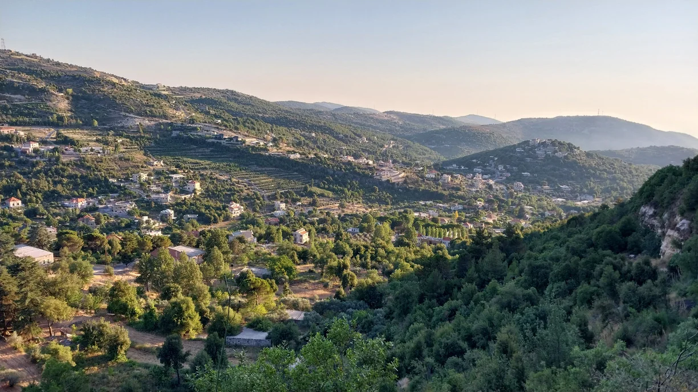
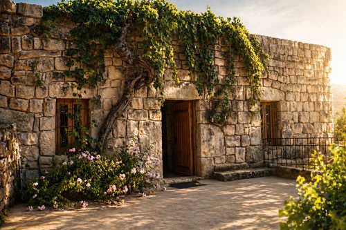

Lehfed · Mount Lebanon
A walk through faith, history & nature.
One village. Countless stories along the way. Discover the Brother Estephan Trail.
- Distance
- 10.5 km
- Elevation range
- 900–1,100 m
- Difficulty
- Moderate
- Stops
- 23
01 The story
More than a hike.
A village to discover.
In the mountains of Mount Lebanon, Lehfed brings together the history, faith and traditions of an old Maronite village.
Follow village paths past historic churches, traces of rural life and beautiful landscapes. The Brother Estephan Trail is a journey through the identity and natural richness of this mountain village.
Brother Estephan Trail — by Thomas Matar


A landscape shaped by nature and village life.
02 Along the way
Every stop
tells a story.
Explore the religious, historical and natural places listed in the trail project.
03 Find your path
10.5 kilometres.
A different perspective.
A moderate route mixing nature, religious heritage and history, connecting the village with the surrounding landscape.
This is the overview map from the original project. It is not a live navigation map or a GPS track.
A closer look
Scenes from the trail.
04 Caring for the trail
Making the way.
Three kinds of work are bringing the trail to life: clearing the path, bordering it with stones, and painting direction signs with safety equipment.
Clearing the path
Tree pruning, removing thorns and weeding across six zones.
- Zone 1Done
- Zone 2Done
- Zone 3Done
- Zone 4Done
- Zone 5To do
- Zone 6To do
Bordering with stones
Marking the path borders with stones over 6.6 km, in five zones.
- Zone 1Done
- Zone 2Done
- Zone 3To do
- Zone 4To do
- Zone 5To do
Signs & safety
Painting direction signs along all 10.5 km and installing safety equipment, in three zones.
- Zone 1To do
- Zone 2To do
- Zone 3To do
Progress as reported in Thomas Matar’s project update of 25 November 2026. Hours are work time for each zone, not hiking times.
05 Before you set out
Walk thoughtfully.
Leave only footprints.
Respect places of worship, village life and the natural landscape. Stay on established paths and take your litter home.
The source document does not provide a confirmed trailhead, GPS file, opening schedule or current trail conditions. Confirm access locally before setting out.
Find Lehfed on Google Maps Village location only; not turn-by-turn trail directions.Your walking checklist
Tick items as you prepare.